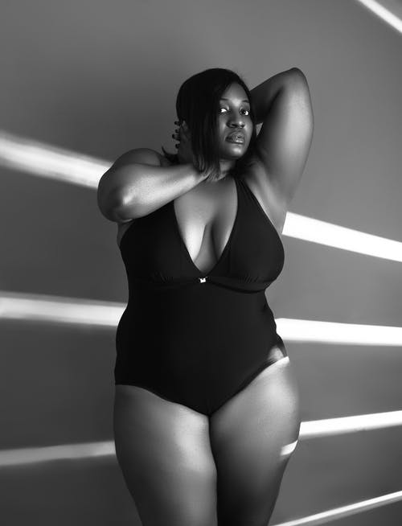

As my 'mummy' always told me, confidence is the best outfit anyone could ever wear. Choosing not to try is the worst enemy anyone could ever have. Believing in yourself matters
My journey to building my confidence started three years ago when I was in high school. I got selected as the school's environment captain, which I never expected since I knew myself as a very shy person to even supervise anyone. I took it as a challenge and a stepping stone for me since I had, by fire by force to be a public speaker since I had to address the whole school every Fridays. I could go to the washroom's mirror and start talking to myself before going to the assembly. That kinda boosted my courage to stand infront of so many eyes and speak to them though I could terribly shake before,while and after speaking to them. I got used to that as time went by and eventually got a tactic that made me even be more confident than I had ever thought. Assuming everyone I'm looking at is sitting on toilet seats was the trick!
All that came to an end when I joined AkiraChix. I had zero confidence in both myself and my studies. The reason behind that I have never known yet but with time all that ceased and I gained my old self. My performance in school began improving and even my class overall participation. To date, I speak whenever necessary to anyone without fear but with respect and that has always made me so proud of myself knowing that I had been struggling with confidence for the longest time but now I'm good. I'm always wearing my best outfit, confidence!